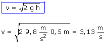
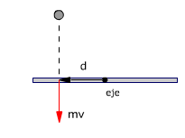
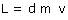
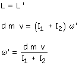
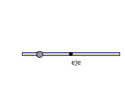
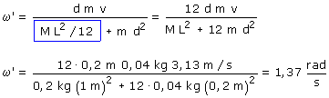
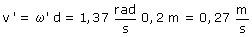

Velocidad de la bolita al llegar a la varilla:

El sistema no esta aislado en traslación
porque la reacción del eje impide el desplazamiento de la varilla
al recibir el impacto. El momento lineal no se conserva
El sistema sí está aislado en rotación porque el
momento de la reacción del eje es nulo. El momento an-gular se
conservará
 |
 Este momento angular es positivo |
Conservación del momento angular:  Esta velocidad angular será positiva |
 |
|

La varilla girará con velocidad 1.37 rad/s en sentido antihorario
La bola incrustada en la varilla recorre una circunferencia de radio 20 cm, su velocidad lineal será:
